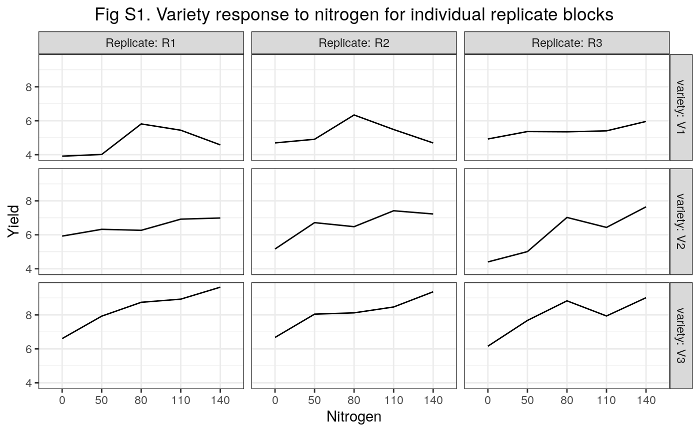

Example 1: Split-plot design with one qualitative and one quantitative level factor
example1.RdGomez & Gomez (1984, p. 143) report a rice experiment with three management practices (minimum, optimum, intensive), five different amounts of nitrogen (N) fertilizer (0, 50, 80, 110, 140 kg/ha), and three varieties (V1, V2, V3). The experiment involved variety and management as qualitative treatment factors and nitrogen fertilizer as a quantitative treatment factor. Overall, there were 45 treatments with three replicates in complete replicate blocks. The fertilizer treatments were applied to main plots, the management practices to split-plots and the varieties to split-split-plots.
Details
Section 1 Section 1 examines treatment effects by fitting qualitative factorial models and the first analysis calculates a full analysis of variance (Table 1) for main plots (nitrogen), split-plots (management) and split-split-plots (variety). Each type of experimental unit (or "stratum") requires a separate error term in the fitted analysis.
The second analysis (Table 2) uses a REML mixed model analysis to find treatment means and SE's for each marginal treatment classification averaged over all the other treatment factors, together with estimates of pairwise contrasts of treatment means and the SE's of the pairwise treatment comparisons. This analysis fits the full set of nitrogen-by-variety interaction effects assuming additive management effects and the fit of the model is tested by a graphical plot of the model residuals. Residual plots provide an important check on model assumptions but many more options for model testing are available and further methods for diagnostic testing are examined in the subsequent examples.
The third analysis (Table 3) shows a mixed model analysis of the full factorial model fitted by REML using the lmer function of the lme4 package. Generally with mixed models, determination of the denominator degrees of freedom for Wald-type F- and t-statistics becomes an issue, and here we use the method proposed by Kenward & Roger (1997).
Section 2 Section 2 examines treatment effects by fitting polynomial models and the first step calculates a full set of four raw polynomials for the 5-levels of N using the poly() function. The N rates are re-scaled by division by 100 to improve numerical stability.
The second step fits a mixed model polynomial analysis of nitrogen effects assuming additive management effects (Table 7). In this analysis, most of the nitrogen treatment effect can be explained by linear and quadratic trend effects. but it is important to note that there is a non-negligible Variety x Cubic N interaction effect. This suggests that not all the varieties responded in a similar way to the N treatments and that some further analysis of the data may be required (see also the N plots of individual varieties and replicates in Fig 1).
The third step fits the required model for the actual fitted model coefficients (Table 8). When estimating model effects, only effects that are significant for the fitted model or that are marginal to those effects (functional marginality) should be included in the model therefore only linear and quadratic nitrogen effects are included in this model. The fitted model for the nitrogen effects fits the actual actual nitrogen levels used in the experiment therefore this model provides the required coefficients for the actual applied nitrogen levels.
Section 3
Section 3 provides checks on some of the assumptions underlying the blocks-by-treatments model.
The first analysis in this section shows a complete partition of the blocks-by-treatments interaction effects into factorial mean square terms where all the terms that contain a replicate:variety interaction effect are estimates of the split-split-plot error variance. If the blocks-by-treatments assumptions are valid, all the estimates of the split-split-plot error variance are expected to have the same error mean square. However, the Replicate:variety effect has a mean square of 1.54 on 4 degrees of freedom whereas the Replicate:management:variety:nitrogen effect has a mean square of 0.26 on 32 degrees of freedom. The ratio of these mean squares is 5.92 with an F-probability of 0.00110 on 4 and 32 degrees of freedom, which means that the Replicate:variety interaction effect is significantly inflated relative to the Replicate:management:variety:nitrogen effect. This shows that the assumptions underlying the blocks-by-treatments analysis of the model are invalid with a high level of probability.
The 4 degrees of freedom in the Replicate:variety interaction effect are the differences between the three varieties differenced between the three replicate blocks. Fig S1 shows graphical plots of variety effects in each replicate block averaged over management effects, and there is clear evidence that the effects of Variety 1 in blocks 1 and 2 were different from the effects of Variety 1 in block 3.
The second analysis in Section 3 shows a complete partition of the blocks-by-treatments interaction effects into factorial mean square terms ignoring Variety 1. This analysis shows a reasonably good fit to the assumed additive block which supports the hypothesis that the non-additivity of the block-and-treatment effects in the full unrestricted analysis is mainly due to Variety 1.
The final analysis in Section 3 shows an analysis of variance of the treatment effects ignoring Variety 1. In this analysis, the management:variety interaction effect becomes significant at the 0.00992 probability level compared with a non-significant management:variety interaction effect in the analysis of the full data set.
Such anomalies are not uncommon in the analysis of real data sets and it is the task of the statistician to identify anomalies as and when they occur. Factorial designs can be very powerful for practical research but, as demonstrated with this data set, the analysis of such designs is complex and anomalies can be easily missed. Unless an anomaly is due to an easily identified cause such as an incorrectly recorded data point, it is likely that the anomaly will need to be investigated by further discussion with the research workers. It is a mistake to suppose that data from a designed experiment can be analysed statistically in isolation from the research workers who conducted the experiment.
References
Gomez, K. A., & Gomez, A. A. (1984). Statistical Procedures for Agricultural Research. John Wiley & Sons.
Kenward, M. G., & Roger, J. H. (1997). Small sample inference for fixed effects from restricted maximum likelihood. Biometrics, 53, 983–997.
Piepho, H., & Edmondson, R. (2018). A tutorial on the Statistical Analysis of Factorial Experiments with Qualitative and Quantitative treatment factor levels. Journal of Agronomy and Crop Science. (https://onlinelibrary.wiley.com/doi/full/10.1111/jac.12267).
Examples
data(rice) library(broom)#> #>#> #> #>library(broom.mixed)#> #>#> #> #>library(dplyr)#> #>#> #> #>#> #> #>#> #> #>library(emmeans)#> #> #>library(ggfortify)#>library(ggplot2) library(kableExtra) library(knitr) library(lmerTest)#>#>#> #>#> #> #>#> #>#> #> #>#> #> #>library(magrittr) library(nlme)#> #>#> #> #>#> #> #>library(pbkrtest) options(contrasts = c('contr.treatment', 'contr.poly')) ##----fm1.1---- fm1.1 <- aov(yield ~ Replicate + nitrogen * management * variety + Error(Replicate/nitrogen/management), rice) fm1.1.Summary <- broom::tidy(fm1.1) ##----fm1.1.Summary---- kableExtra::kable( fm1.1.Summary , caption = "ANOVA Table" )#> <table> #> <caption>ANOVA Table</caption> #> <thead> #> <tr> #> <th style="text-align:left;"> stratum </th> #> <th style="text-align:left;"> term </th> #> <th style="text-align:right;"> df </th> #> <th style="text-align:right;"> sumsq </th> #> <th style="text-align:right;"> meansq </th> #> <th style="text-align:right;"> statistic </th> #> <th style="text-align:right;"> p.value </th> #> </tr> #> </thead> #> <tbody> #> <tr> #> <td style="text-align:left;"> Replicate </td> #> <td style="text-align:left;"> Replicate </td> #> <td style="text-align:right;"> 2 </td> #> <td style="text-align:right;"> 0.7319945 </td> #> <td style="text-align:right;"> 0.3659973 </td> #> <td style="text-align:right;"> NA </td> #> <td style="text-align:right;"> NA </td> #> </tr> #> <tr> #> <td style="text-align:left;"> Replicate:nitrogen </td> #> <td style="text-align:left;"> nitrogen </td> #> <td style="text-align:right;"> 4 </td> #> <td style="text-align:right;"> 61.6408218 </td> #> <td style="text-align:right;"> 15.4102055 </td> #> <td style="text-align:right;"> 27.6953339 </td> #> <td style="text-align:right;"> 0.0000973 </td> #> </tr> #> <tr> #> <td style="text-align:left;"> Replicate:nitrogen </td> #> <td style="text-align:left;"> Residuals </td> #> <td style="text-align:right;"> 8 </td> #> <td style="text-align:right;"> 4.4513507 </td> #> <td style="text-align:right;"> 0.5564188 </td> #> <td style="text-align:right;"> NA </td> #> <td style="text-align:right;"> NA </td> #> </tr> #> <tr> #> <td style="text-align:left;"> Replicate:nitrogen:management </td> #> <td style="text-align:left;"> management </td> #> <td style="text-align:right;"> 2 </td> #> <td style="text-align:right;"> 42.9361070 </td> #> <td style="text-align:right;"> 21.4680535 </td> #> <td style="text-align:right;"> 81.9964891 </td> #> <td style="text-align:right;"> 0.0000000 </td> #> </tr> #> <tr> #> <td style="text-align:left;"> Replicate:nitrogen:management </td> #> <td style="text-align:left;"> nitrogen:management </td> #> <td style="text-align:right;"> 8 </td> #> <td style="text-align:right;"> 1.1029733 </td> #> <td style="text-align:right;"> 0.1378717 </td> #> <td style="text-align:right;"> 0.5265960 </td> #> <td style="text-align:right;"> 0.8226476 </td> #> </tr> #> <tr> #> <td style="text-align:left;"> Replicate:nitrogen:management </td> #> <td style="text-align:left;"> Residuals </td> #> <td style="text-align:right;"> 20 </td> #> <td style="text-align:right;"> 5.2363348 </td> #> <td style="text-align:right;"> 0.2618167 </td> #> <td style="text-align:right;"> NA </td> #> <td style="text-align:right;"> NA </td> #> </tr> #> <tr> #> <td style="text-align:left;"> Within </td> #> <td style="text-align:left;"> variety </td> #> <td style="text-align:right;"> 2 </td> #> <td style="text-align:right;"> 206.0131597 </td> #> <td style="text-align:right;"> 103.0065799 </td> #> <td style="text-align:right;"> 207.8667118 </td> #> <td style="text-align:right;"> 0.0000000 </td> #> </tr> #> <tr> #> <td style="text-align:left;"> Within </td> #> <td style="text-align:left;"> nitrogen:variety </td> #> <td style="text-align:right;"> 8 </td> #> <td style="text-align:right;"> 14.1445063 </td> #> <td style="text-align:right;"> 1.7680633 </td> #> <td style="text-align:right;"> 3.5679420 </td> #> <td style="text-align:right;"> 0.0019157 </td> #> </tr> #> <tr> #> <td style="text-align:left;"> Within </td> #> <td style="text-align:left;"> management:variety </td> #> <td style="text-align:right;"> 4 </td> #> <td style="text-align:right;"> 3.8517692 </td> #> <td style="text-align:right;"> 0.9629423 </td> #> <td style="text-align:right;"> 1.9432123 </td> #> <td style="text-align:right;"> 0.1148989 </td> #> </tr> #> <tr> #> <td style="text-align:left;"> Within </td> #> <td style="text-align:left;"> nitrogen:management:variety </td> #> <td style="text-align:right;"> 16 </td> #> <td style="text-align:right;"> 3.6992321 </td> #> <td style="text-align:right;"> 0.2312020 </td> #> <td style="text-align:right;"> 0.4665644 </td> #> <td style="text-align:right;"> 0.9537588 </td> #> </tr> #> <tr> #> <td style="text-align:left;"> Within </td> #> <td style="text-align:left;"> Residuals </td> #> <td style="text-align:right;"> 60 </td> #> <td style="text-align:right;"> 29.7324893 </td> #> <td style="text-align:right;"> 0.4955415 </td> #> <td style="text-align:right;"> NA </td> #> <td style="text-align:right;"> NA </td> #> </tr> #> </tbody> #> </table>##----fm1.2---- fm1.2 <- lmer(yield ~ Replicate + nitrogen * management * variety + (1|Replicate:Main) + (1|Replicate:Main:Sub), data = rice) fm1.2.ANOVA <- anova(fm1.2, ddf = "Kenward-Roger", type = 1) ##----fm1.2.ANOVA---- kableExtra::kable( fm1.2.ANOVA , caption = "Mixed Model ANOVA" )#> <table> #> <caption>Mixed Model ANOVA</caption> #> <thead> #> <tr> #> <th style="text-align:left;"> </th> #> <th style="text-align:right;"> Sum Sq </th> #> <th style="text-align:right;"> Mean Sq </th> #> <th style="text-align:right;"> NumDF </th> #> <th style="text-align:right;"> DenDF </th> #> <th style="text-align:right;"> F value </th> #> <th style="text-align:right;"> Pr(>F) </th> #> </tr> #> </thead> #> <tbody> #> <tr> #> <td style="text-align:left;"> Replicate </td> #> <td style="text-align:right;"> 0.5750387 </td> #> <td style="text-align:right;"> 0.2875193 </td> #> <td style="text-align:right;"> 2 </td> #> <td style="text-align:right;"> 8 </td> #> <td style="text-align:right;"> 0.6577729 </td> #> <td style="text-align:right;"> 0.5439096 </td> #> </tr> #> <tr> #> <td style="text-align:left;"> nitrogen </td> #> <td style="text-align:right;"> 48.4236632 </td> #> <td style="text-align:right;"> 12.1059158 </td> #> <td style="text-align:right;"> 4 </td> #> <td style="text-align:right;"> 8 </td> #> <td style="text-align:right;"> 27.6953340 </td> #> <td style="text-align:right;"> 0.0000973 </td> #> </tr> #> <tr> #> <td style="text-align:left;"> management </td> #> <td style="text-align:right;"> 42.9361070 </td> #> <td style="text-align:right;"> 21.4680535 </td> #> <td style="text-align:right;"> 2 </td> #> <td style="text-align:right;"> 20 </td> #> <td style="text-align:right;"> 49.1135840 </td> #> <td style="text-align:right;"> 0.0000000 </td> #> </tr> #> <tr> #> <td style="text-align:left;"> variety </td> #> <td style="text-align:right;"> 206.0131597 </td> #> <td style="text-align:right;"> 103.0065799 </td> #> <td style="text-align:right;"> 2 </td> #> <td style="text-align:right;"> 60 </td> #> <td style="text-align:right;"> 235.6535168 </td> #> <td style="text-align:right;"> 0.0000000 </td> #> </tr> #> <tr> #> <td style="text-align:left;"> nitrogen:management </td> #> <td style="text-align:right;"> 1.1029733 </td> #> <td style="text-align:right;"> 0.1378717 </td> #> <td style="text-align:right;"> 8 </td> #> <td style="text-align:right;"> 20 </td> #> <td style="text-align:right;"> 0.3154162 </td> #> <td style="text-align:right;"> 0.9508797 </td> #> </tr> #> <tr> #> <td style="text-align:left;"> nitrogen:variety </td> #> <td style="text-align:right;"> 14.1445063 </td> #> <td style="text-align:right;"> 1.7680633 </td> #> <td style="text-align:right;"> 8 </td> #> <td style="text-align:right;"> 60 </td> #> <td style="text-align:right;"> 4.0448905 </td> #> <td style="text-align:right;"> 0.0006765 </td> #> </tr> #> <tr> #> <td style="text-align:left;"> management:variety </td> #> <td style="text-align:right;"> 3.8517692 </td> #> <td style="text-align:right;"> 0.9629423 </td> #> <td style="text-align:right;"> 4 </td> #> <td style="text-align:right;"> 60 </td> #> <td style="text-align:right;"> 2.2029732 </td> #> <td style="text-align:right;"> 0.0793657 </td> #> </tr> #> <tr> #> <td style="text-align:left;"> nitrogen:management:variety </td> #> <td style="text-align:right;"> 3.6992321 </td> #> <td style="text-align:right;"> 0.2312020 </td> #> <td style="text-align:right;"> 16 </td> #> <td style="text-align:right;"> 60 </td> #> <td style="text-align:right;"> 0.5289329 </td> #> <td style="text-align:right;"> 0.9210465 </td> #> </tr> #> </tbody> #> </table>##----fm1.3---- fm1.3 <- lmer(yield ~ Replicate + nitrogen + management + variety + nitrogen:variety + (1|Replicate:Main) + (1|Replicate:Main:Sub), data = rice) fm1.3.ANOVA <- anova(fm1.3, ddf = "Kenward-Roger", type = 1) emmeans::emmeans(fm1.3, ~ nitrogen)#>#> nitrogen emmean SE df lower.CL upper.CL #> 0 5.384704 0.1435552 8 5.053665 5.715743 #> 50 6.220333 0.1435552 8 5.889294 6.551372 #> 80 6.995741 0.1435552 8 6.664702 7.326780 #> 110 6.937370 0.1435552 8 6.606331 7.268409 #> 140 7.233926 0.1435552 8 6.902887 7.564965 #> #> Results are averaged over the levels of: Replicate, management, variety #> Degrees-of-freedom method: kenward-roger #> Confidence level used: 0.95#>#> variety emmean SE df lower.CL upper.CL #> V1 5.126822 0.1005263 39.72 4.923606 5.330038 #> V2 6.396133 0.1005263 39.72 6.192917 6.599349 #> V3 8.140289 0.1005263 39.72 7.937073 8.343505 #> #> Results are averaged over the levels of: Replicate, nitrogen, management #> Degrees-of-freedom method: kenward-roger #> Confidence level used: 0.95#> nitrogen variety emmean SE df lower.CL upper.CL #> 0 V1 4.513111 0.2247837 39.72 4.058706 4.967516 #> 50 V1 4.763667 0.2247837 39.72 4.309262 5.218071 #> 80 V1 5.834889 0.2247837 39.72 5.380484 6.289294 #> 110 V1 5.444667 0.2247837 39.72 4.990262 5.899071 #> 140 V1 5.077778 0.2247837 39.72 4.623373 5.532182 #> 0 V2 5.162889 0.2247837 39.72 4.708484 5.617294 #> 50 V2 6.016222 0.2247837 39.72 5.561818 6.470627 #> 80 V2 6.588556 0.2247837 39.72 6.134151 7.042960 #> 110 V2 6.924556 0.2247837 39.72 6.470151 7.378960 #> 140 V2 7.288444 0.2247837 39.72 6.834040 7.742849 #> 0 V3 6.478111 0.2247837 39.72 6.023706 6.932516 #> 50 V3 7.881111 0.2247837 39.72 7.426706 8.335516 #> 80 V3 8.563778 0.2247837 39.72 8.109373 9.018182 #> 110 V3 8.442889 0.2247837 39.72 7.988484 8.897294 #> 140 V3 9.335556 0.2247837 39.72 8.881151 9.789960 #> #> Results are averaged over the levels of: Replicate, management #> Degrees-of-freedom method: kenward-roger #> Confidence level used: 0.95emmeans::contrast( emmeans::emmeans(fm1.3, ~ nitrogen|variety) , alpha = 0.05 , method = "pairwise" )#> variety = V1: #> contrast estimate SE df t.ratio p.value #> 0 - 50 -0.2505556 0.3178922 39.72 -0.788 0.9326 #> 0 - 80 -1.3217778 0.3178922 39.72 -4.158 0.0015 #> 0 - 110 -0.9315556 0.3178922 39.72 -2.930 0.0420 #> 0 - 140 -0.5646667 0.3178922 39.72 -1.776 0.4012 #> 50 - 80 -1.0712222 0.3178922 39.72 -3.370 0.0138 #> 50 - 110 -0.6810000 0.3178922 39.72 -2.142 0.2230 #> 50 - 140 -0.3141111 0.3178922 39.72 -0.988 0.8591 #> 80 - 110 0.3902222 0.3178922 39.72 1.228 0.7356 #> 80 - 140 0.7571111 0.3178922 39.72 2.382 0.1416 #> 110 - 140 0.3668889 0.3178922 39.72 1.154 0.7768 #> #> variety = V2: #> contrast estimate SE df t.ratio p.value #> 0 - 50 -0.8533333 0.3178922 39.72 -2.684 0.0744 #> 0 - 80 -1.4256667 0.3178922 39.72 -4.485 0.0006 #> 0 - 110 -1.7616667 0.3178922 39.72 -5.542 <.0001 #> 0 - 140 -2.1255556 0.3178922 39.72 -6.686 <.0001 #> 50 - 80 -0.5723333 0.3178922 39.72 -1.800 0.3877 #> 50 - 110 -0.9083333 0.3178922 39.72 -2.857 0.0500 #> 50 - 140 -1.2722222 0.3178922 39.72 -4.002 0.0023 #> 80 - 110 -0.3360000 0.3178922 39.72 -1.057 0.8270 #> 80 - 140 -0.6998889 0.3178922 39.72 -2.202 0.2002 #> 110 - 140 -0.3638889 0.3178922 39.72 -1.145 0.7819 #> #> variety = V3: #> contrast estimate SE df t.ratio p.value #> 0 - 50 -1.4030000 0.3178922 39.72 -4.413 0.0007 #> 0 - 80 -2.0856667 0.3178922 39.72 -6.561 <.0001 #> 0 - 110 -1.9647778 0.3178922 39.72 -6.181 <.0001 #> 0 - 140 -2.8574444 0.3178922 39.72 -8.989 <.0001 #> 50 - 80 -0.6826667 0.3178922 39.72 -2.147 0.2209 #> 50 - 110 -0.5617778 0.3178922 39.72 -1.767 0.4064 #> 50 - 140 -1.4544444 0.3178922 39.72 -4.575 0.0004 #> 80 - 110 0.1208889 0.3178922 39.72 0.380 0.9954 #> 80 - 140 -0.7717778 0.3178922 39.72 -2.428 0.1290 #> 110 - 140 -0.8926667 0.3178922 39.72 -2.808 0.0561 #> #> Results are averaged over the levels of: Replicate, management #> P value adjustment: tukey method for comparing a family of 5 estimatesemmeans::contrast( emmeans::emmeans(fm1.3, ~ variety|nitrogen) , alpha = 0.05 , method = "pairwise" )#> nitrogen = 0: #> contrast estimate SE df t.ratio p.value #> V1 - V2 -0.6497778 0.2995978 80 -2.169 0.0828 #> V1 - V3 -1.9650000 0.2995978 80 -6.559 <.0001 #> V2 - V3 -1.3152222 0.2995978 80 -4.390 0.0001 #> #> nitrogen = 50: #> contrast estimate SE df t.ratio p.value #> V1 - V2 -1.2525556 0.2995978 80 -4.181 0.0002 #> V1 - V3 -3.1174444 0.2995978 80 -10.405 <.0001 #> V2 - V3 -1.8648889 0.2995978 80 -6.225 <.0001 #> #> nitrogen = 80: #> contrast estimate SE df t.ratio p.value #> V1 - V2 -0.7536667 0.2995978 80 -2.516 0.0366 #> V1 - V3 -2.7288889 0.2995978 80 -9.109 <.0001 #> V2 - V3 -1.9752222 0.2995978 80 -6.593 <.0001 #> #> nitrogen = 110: #> contrast estimate SE df t.ratio p.value #> V1 - V2 -1.4798889 0.2995978 80 -4.940 <.0001 #> V1 - V3 -2.9982222 0.2995978 80 -10.007 <.0001 #> V2 - V3 -1.5183333 0.2995978 80 -5.068 <.0001 #> #> nitrogen = 140: #> contrast estimate SE df t.ratio p.value #> V1 - V2 -2.2106667 0.2995978 80 -7.379 <.0001 #> V1 - V3 -4.2577778 0.2995978 80 -14.212 <.0001 #> V2 - V3 -2.0471111 0.2995978 80 -6.833 <.0001 #> #> Results are averaged over the levels of: Replicate, management #> P value adjustment: tukey method for comparing a family of 3 estimates##----fm1.3.Plot---- fm1.3.Augment <- broom.mixed::augment(fm1.3) ggplot(data = fm1.3.Augment, mapping = aes(x = .fitted, y = .resid)) + geom_point() + geom_hline(yintercept = 0) + labs( x = "Fitted" , y = "Residuals" , title = "Full analysis with full nitrogen effects") + theme_bw() + theme(plot.title = element_text(hjust = 0.5))##----fm1.4---- fm1.4 <- lmer(yield ~ Replicate + nitrogen * management * variety + (1|Replicate:Main) + (1|Replicate:Main:Sub), data = rice) fm1.4.ANOVA <- anova(fm1.4, ddf = "Kenward-Roger", type = 1) ##----fm1.4.ANOVA---- kableExtra::kable( fm1.4.ANOVA , caption = "Mixed Model ANOVA" )#> <table> #> <caption>Mixed Model ANOVA</caption> #> <thead> #> <tr> #> <th style="text-align:left;"> </th> #> <th style="text-align:right;"> Sum Sq </th> #> <th style="text-align:right;"> Mean Sq </th> #> <th style="text-align:right;"> NumDF </th> #> <th style="text-align:right;"> DenDF </th> #> <th style="text-align:right;"> F value </th> #> <th style="text-align:right;"> Pr(>F) </th> #> </tr> #> </thead> #> <tbody> #> <tr> #> <td style="text-align:left;"> Replicate </td> #> <td style="text-align:right;"> 0.5750387 </td> #> <td style="text-align:right;"> 0.2875193 </td> #> <td style="text-align:right;"> 2 </td> #> <td style="text-align:right;"> 8 </td> #> <td style="text-align:right;"> 0.6577729 </td> #> <td style="text-align:right;"> 0.5439096 </td> #> </tr> #> <tr> #> <td style="text-align:left;"> nitrogen </td> #> <td style="text-align:right;"> 48.4236632 </td> #> <td style="text-align:right;"> 12.1059158 </td> #> <td style="text-align:right;"> 4 </td> #> <td style="text-align:right;"> 8 </td> #> <td style="text-align:right;"> 27.6953340 </td> #> <td style="text-align:right;"> 0.0000973 </td> #> </tr> #> <tr> #> <td style="text-align:left;"> management </td> #> <td style="text-align:right;"> 42.9361070 </td> #> <td style="text-align:right;"> 21.4680535 </td> #> <td style="text-align:right;"> 2 </td> #> <td style="text-align:right;"> 20 </td> #> <td style="text-align:right;"> 49.1135840 </td> #> <td style="text-align:right;"> 0.0000000 </td> #> </tr> #> <tr> #> <td style="text-align:left;"> variety </td> #> <td style="text-align:right;"> 206.0131597 </td> #> <td style="text-align:right;"> 103.0065799 </td> #> <td style="text-align:right;"> 2 </td> #> <td style="text-align:right;"> 60 </td> #> <td style="text-align:right;"> 235.6535168 </td> #> <td style="text-align:right;"> 0.0000000 </td> #> </tr> #> <tr> #> <td style="text-align:left;"> nitrogen:management </td> #> <td style="text-align:right;"> 1.1029733 </td> #> <td style="text-align:right;"> 0.1378717 </td> #> <td style="text-align:right;"> 8 </td> #> <td style="text-align:right;"> 20 </td> #> <td style="text-align:right;"> 0.3154162 </td> #> <td style="text-align:right;"> 0.9508797 </td> #> </tr> #> <tr> #> <td style="text-align:left;"> nitrogen:variety </td> #> <td style="text-align:right;"> 14.1445063 </td> #> <td style="text-align:right;"> 1.7680633 </td> #> <td style="text-align:right;"> 8 </td> #> <td style="text-align:right;"> 60 </td> #> <td style="text-align:right;"> 4.0448905 </td> #> <td style="text-align:right;"> 0.0006765 </td> #> </tr> #> <tr> #> <td style="text-align:left;"> management:variety </td> #> <td style="text-align:right;"> 3.8517692 </td> #> <td style="text-align:right;"> 0.9629423 </td> #> <td style="text-align:right;"> 4 </td> #> <td style="text-align:right;"> 60 </td> #> <td style="text-align:right;"> 2.2029732 </td> #> <td style="text-align:right;"> 0.0793657 </td> #> </tr> #> <tr> #> <td style="text-align:left;"> nitrogen:management:variety </td> #> <td style="text-align:right;"> 3.6992321 </td> #> <td style="text-align:right;"> 0.2312020 </td> #> <td style="text-align:right;"> 16 </td> #> <td style="text-align:right;"> 60 </td> #> <td style="text-align:right;"> 0.5289329 </td> #> <td style="text-align:right;"> 0.9210465 </td> #> </tr> #> </tbody> #> </table>##----fm1.5---- fm1.5 <- lmer(yield ~ Replicate + management + variety * (nrate + I(nrate^2) + I(nrate^3) + I(nrate^4)) + (1|Replicate:Main) + (1|Replicate:Main:Sub), data = rice)#> Warning: Some predictor variables are on very different scales: consider rescaling#> Warning: Some predictor variables are on very different scales: consider rescalingfm1.5.ANOVA <- anova(fm1.5, ddf = "Kenward-Roger", type = 1) ##----fm1.5.ANOVA---- kableExtra::kable( fm1.5.ANOVA , caption = "Mixed Model ANOVA" )#> <table> #> <caption>Mixed Model ANOVA</caption> #> <thead> #> <tr> #> <th style="text-align:left;"> </th> #> <th style="text-align:right;"> Sum Sq </th> #> <th style="text-align:right;"> Mean Sq </th> #> <th style="text-align:right;"> NumDF </th> #> <th style="text-align:right;"> DenDF </th> #> <th style="text-align:right;"> F value </th> #> <th style="text-align:right;"> Pr(>F) </th> #> </tr> #> </thead> #> <tbody> #> <tr> #> <td style="text-align:left;"> Replicate </td> #> <td style="text-align:right;"> 0.5313684 </td> #> <td style="text-align:right;"> 0.2656842 </td> #> <td style="text-align:right;"> 2 </td> #> <td style="text-align:right;"> 8 </td> #> <td style="text-align:right;"> 0.6577729 </td> #> <td style="text-align:right;"> 0.5439096 </td> #> </tr> #> <tr> #> <td style="text-align:left;"> management </td> #> <td style="text-align:right;"> 42.9361070 </td> #> <td style="text-align:right;"> 21.4680535 </td> #> <td style="text-align:right;"> 2 </td> #> <td style="text-align:right;"> 28 </td> #> <td style="text-align:right;"> 53.1499552 </td> #> <td style="text-align:right;"> 0.0000000 </td> #> </tr> #> <tr> #> <td style="text-align:left;"> variety </td> #> <td style="text-align:right;"> 206.0131597 </td> #> <td style="text-align:right;"> 103.0065799 </td> #> <td style="text-align:right;"> 2 </td> #> <td style="text-align:right;"> 80 </td> #> <td style="text-align:right;"> 255.0205635 </td> #> <td style="text-align:right;"> 0.0000000 </td> #> </tr> #> <tr> #> <td style="text-align:left;"> nrate </td> #> <td style="text-align:right;"> 40.6243075 </td> #> <td style="text-align:right;"> 40.6243075 </td> #> <td style="text-align:right;"> 1 </td> #> <td style="text-align:right;"> 8 </td> #> <td style="text-align:right;"> 100.5764273 </td> #> <td style="text-align:right;"> 0.0000083 </td> #> </tr> #> <tr> #> <td style="text-align:left;"> I(nrate^2) </td> #> <td style="text-align:right;"> 2.4897972 </td> #> <td style="text-align:right;"> 2.4897972 </td> #> <td style="text-align:right;"> 1 </td> #> <td style="text-align:right;"> 8 </td> #> <td style="text-align:right;"> 6.1641643 </td> #> <td style="text-align:right;"> 0.0379472 </td> #> </tr> #> <tr> #> <td style="text-align:left;"> I(nrate^3) </td> #> <td style="text-align:right;"> 0.0379172 </td> #> <td style="text-align:right;"> 0.0379172 </td> #> <td style="text-align:right;"> 1 </td> #> <td style="text-align:right;"> 8 </td> #> <td style="text-align:right;"> 0.0938744 </td> #> <td style="text-align:right;"> 0.7671307 </td> #> </tr> #> <tr> #> <td style="text-align:left;"> I(nrate^4) </td> #> <td style="text-align:right;"> 1.5941951 </td> #> <td style="text-align:right;"> 1.5941951 </td> #> <td style="text-align:right;"> 1 </td> #> <td style="text-align:right;"> 8 </td> #> <td style="text-align:right;"> 3.9468599 </td> #> <td style="text-align:right;"> 0.0821956 </td> #> </tr> #> <tr> #> <td style="text-align:left;"> variety:nrate </td> #> <td style="text-align:right;"> 9.8607580 </td> #> <td style="text-align:right;"> 4.9303790 </td> #> <td style="text-align:right;"> 2 </td> #> <td style="text-align:right;"> 80 </td> #> <td style="text-align:right;"> 12.2064827 </td> #> <td style="text-align:right;"> 0.0000236 </td> #> </tr> #> <tr> #> <td style="text-align:left;"> variety:I(nrate^2) </td> #> <td style="text-align:right;"> 0.8039690 </td> #> <td style="text-align:right;"> 0.4019845 </td> #> <td style="text-align:right;"> 2 </td> #> <td style="text-align:right;"> 80 </td> #> <td style="text-align:right;"> 0.9952210 </td> #> <td style="text-align:right;"> 0.3741712 </td> #> </tr> #> <tr> #> <td style="text-align:left;"> variety:I(nrate^3) </td> #> <td style="text-align:right;"> 2.7833936 </td> #> <td style="text-align:right;"> 1.3916968 </td> #> <td style="text-align:right;"> 2 </td> #> <td style="text-align:right;"> 80 </td> #> <td style="text-align:right;"> 3.4455207 </td> #> <td style="text-align:right;"> 0.0366944 </td> #> </tr> #> <tr> #> <td style="text-align:left;"> variety:I(nrate^4) </td> #> <td style="text-align:right;"> 0.6963857 </td> #> <td style="text-align:right;"> 0.3481929 </td> #> <td style="text-align:right;"> 2 </td> #> <td style="text-align:right;"> 80 </td> #> <td style="text-align:right;"> 0.8620453 </td> #> <td style="text-align:right;"> 0.4261825 </td> #> </tr> #> </tbody> #> </table>##----fm1.6---- fm1.6 <- lmer(yield ~ Replicate + management + variety * nrate + I(nrate^2) + (1|Replicate:Main) + (1|Replicate:Main:Sub), data = rice)#> Warning: Some predictor variables are on very different scales: consider rescaling#> Warning: Some predictor variables are on very different scales: consider rescalingfm1.6.Coef <- summary(fm1.6, ddf = "Kenward-Roger")$coef ##----fm1.6.Coef---- kableExtra::kable(fm1.6.Coef)#> <table> #> <thead> #> <tr> #> <th style="text-align:left;"> </th> #> <th style="text-align:right;"> Estimate </th> #> <th style="text-align:right;"> Std. Error </th> #> <th style="text-align:right;"> df </th> #> <th style="text-align:right;"> t value </th> #> <th style="text-align:right;"> Pr(>|t|) </th> #> </tr> #> </thead> #> <tbody> #> <tr> #> <td style="text-align:left;"> (Intercept) </td> #> <td style="text-align:right;"> 3.8387418 </td> #> <td style="text-align:right;"> 0.2478500 </td> #> <td style="text-align:right;"> 31.46271 </td> #> <td style="text-align:right;"> 15.4881672 </td> #> <td style="text-align:right;"> 0.0000000 </td> #> </tr> #> <tr> #> <td style="text-align:left;"> ReplicateR2 </td> #> <td style="text-align:right;"> 0.1179333 </td> #> <td style="text-align:right;"> 0.1725584 </td> #> <td style="text-align:right;"> 10.00000 </td> #> <td style="text-align:right;"> 0.6834401 </td> #> <td style="text-align:right;"> 0.5098535 </td> #> </tr> #> <tr> #> <td style="text-align:left;"> ReplicateR3 </td> #> <td style="text-align:right;"> -0.0592222 </td> #> <td style="text-align:right;"> 0.1725584 </td> #> <td style="text-align:right;"> 10.00000 </td> #> <td style="text-align:right;"> -0.3432010 </td> #> <td style="text-align:right;"> 0.7385530 </td> #> </tr> #> <tr> #> <td style="text-align:left;"> managementOptimum </td> #> <td style="text-align:right;"> 0.5857778 </td> #> <td style="text-align:right;"> 0.1366639 </td> #> <td style="text-align:right;"> 28.00000 </td> #> <td style="text-align:right;"> 4.2862662 </td> #> <td style="text-align:right;"> 0.0001942 </td> #> </tr> #> <tr> #> <td style="text-align:left;"> managementIntensive </td> #> <td style="text-align:right;"> 1.3763333 </td> #> <td style="text-align:right;"> 0.1366639 </td> #> <td style="text-align:right;"> 28.00000 </td> #> <td style="text-align:right;"> 10.0709370 </td> #> <td style="text-align:right;"> 0.0000000 </td> #> </tr> #> <tr> #> <td style="text-align:left;"> varietyV2 </td> #> <td style="text-align:right;"> 0.5374285 </td> #> <td style="text-align:right;"> 0.2543624 </td> #> <td style="text-align:right;"> 86.00000 </td> #> <td style="text-align:right;"> 2.1128455 </td> #> <td style="text-align:right;"> 0.0375125 </td> #> </tr> #> <tr> #> <td style="text-align:left;"> varietyV3 </td> #> <td style="text-align:right;"> 2.0086109 </td> #> <td style="text-align:right;"> 0.2543624 </td> #> <td style="text-align:right;"> 86.00000 </td> #> <td style="text-align:right;"> 7.8966495 </td> #> <td style="text-align:right;"> 0.0000000 </td> #> </tr> #> <tr> #> <td style="text-align:left;"> nrate </td> #> <td style="text-align:right;"> 0.0161292 </td> #> <td style="text-align:right;"> 0.0051084 </td> #> <td style="text-align:right;"> 12.37614 </td> #> <td style="text-align:right;"> 3.1573803 </td> #> <td style="text-align:right;"> 0.0079820 </td> #> </tr> #> <tr> #> <td style="text-align:left;"> I(nrate^2) </td> #> <td style="text-align:right;"> -0.0000753 </td> #> <td style="text-align:right;"> 0.0000333 </td> #> <td style="text-align:right;"> 10.00000 </td> #> <td style="text-align:right;"> -2.2626148 </td> #> <td style="text-align:right;"> 0.0471586 </td> #> </tr> #> <tr> #> <td style="text-align:left;"> varietyV2:nrate </td> #> <td style="text-align:right;"> 0.0096300 </td> #> <td style="text-align:right;"> 0.0028228 </td> #> <td style="text-align:right;"> 86.00000 </td> #> <td style="text-align:right;"> 3.4115590 </td> #> <td style="text-align:right;"> 0.0009863 </td> #> </tr> #> <tr> #> <td style="text-align:left;"> varietyV3:nrate </td> #> <td style="text-align:right;"> 0.0132218 </td> #> <td style="text-align:right;"> 0.0028228 </td> #> <td style="text-align:right;"> 86.00000 </td> #> <td style="text-align:right;"> 4.6839816 </td> #> <td style="text-align:right;"> 0.0000104 </td> #> </tr> #> </tbody> #> </table>##----fm1.6.Coefs---- # fm1.6.Coef[ ,1, drop = FALSE] # Intercepts fm1.6.Coef[1, 1] + sum(fm1.6.Coef[2:3, 1])/3 + sum(fm1.6.Coef[4:5, 1])/3#> [1] 4.512349fm1.6.Coef[1, 1] + sum(fm1.6.Coef[2:3, 1])/3 + sum(fm1.6.Coef[4:5, 1])/3 + fm1.6.Coef[6, 1]#> [1] 5.049778fm1.6.Coef[1, 1] + sum(fm1.6.Coef[2:3, 1])/3 + sum(fm1.6.Coef[4:5, 1])/3 + fm1.6.Coef[7, 1]#> [1] 6.52096# Linear Slopes fm1.6.Coef[8, 1]#> [1] 0.01612922fm1.6.Coef[8, 1] + fm1.6.Coef[10, 1]#> [1] 0.02575925fm1.6.Coef[8, 1] + fm1.6.Coef[11, 1]#> [1] 0.02935101# Quadratic Slopes fm1.6.Coef[9, 1]#> [1] -7.528912e-05##----fm1.7---- fm1.7 <- aov(yield ~ Replicate*management * variety * nitrogen, rice) fm1.7.Summary <- broom::tidy(fm1.7) ##----fm1.7.Summary---- kableExtra::kable( fm1.7.Summary , caption = "ANOVA" )#> <table> #> <caption>ANOVA</caption> #> <thead> #> <tr> #> <th style="text-align:left;"> term </th> #> <th style="text-align:right;"> df </th> #> <th style="text-align:right;"> sumsq </th> #> <th style="text-align:right;"> meansq </th> #> </tr> #> </thead> #> <tbody> #> <tr> #> <td style="text-align:left;"> Replicate </td> #> <td style="text-align:right;"> 2 </td> #> <td style="text-align:right;"> 0.7319945 </td> #> <td style="text-align:right;"> 0.3659973 </td> #> </tr> #> <tr> #> <td style="text-align:left;"> management </td> #> <td style="text-align:right;"> 2 </td> #> <td style="text-align:right;"> 42.9361070 </td> #> <td style="text-align:right;"> 21.4680535 </td> #> </tr> #> <tr> #> <td style="text-align:left;"> variety </td> #> <td style="text-align:right;"> 2 </td> #> <td style="text-align:right;"> 206.0131597 </td> #> <td style="text-align:right;"> 103.0065799 </td> #> </tr> #> <tr> #> <td style="text-align:left;"> nitrogen </td> #> <td style="text-align:right;"> 4 </td> #> <td style="text-align:right;"> 61.6408218 </td> #> <td style="text-align:right;"> 15.4102055 </td> #> </tr> #> <tr> #> <td style="text-align:left;"> Replicate:management </td> #> <td style="text-align:right;"> 4 </td> #> <td style="text-align:right;"> 0.4597212 </td> #> <td style="text-align:right;"> 0.1149303 </td> #> </tr> #> <tr> #> <td style="text-align:left;"> Replicate:variety </td> #> <td style="text-align:right;"> 4 </td> #> <td style="text-align:right;"> 6.1528929 </td> #> <td style="text-align:right;"> 1.5382232 </td> #> </tr> #> <tr> #> <td style="text-align:left;"> management:variety </td> #> <td style="text-align:right;"> 4 </td> #> <td style="text-align:right;"> 3.8517692 </td> #> <td style="text-align:right;"> 0.9629423 </td> #> </tr> #> <tr> #> <td style="text-align:left;"> Replicate:nitrogen </td> #> <td style="text-align:right;"> 8 </td> #> <td style="text-align:right;"> 4.4513507 </td> #> <td style="text-align:right;"> 0.5564188 </td> #> </tr> #> <tr> #> <td style="text-align:left;"> management:nitrogen </td> #> <td style="text-align:right;"> 8 </td> #> <td style="text-align:right;"> 1.1029733 </td> #> <td style="text-align:right;"> 0.1378717 </td> #> </tr> #> <tr> #> <td style="text-align:left;"> variety:nitrogen </td> #> <td style="text-align:right;"> 8 </td> #> <td style="text-align:right;"> 14.1445063 </td> #> <td style="text-align:right;"> 1.7680633 </td> #> </tr> #> <tr> #> <td style="text-align:left;"> Replicate:management:variety </td> #> <td style="text-align:right;"> 8 </td> #> <td style="text-align:right;"> 2.2212941 </td> #> <td style="text-align:right;"> 0.2776618 </td> #> </tr> #> <tr> #> <td style="text-align:left;"> Replicate:management:nitrogen </td> #> <td style="text-align:right;"> 16 </td> #> <td style="text-align:right;"> 4.7766136 </td> #> <td style="text-align:right;"> 0.2985383 </td> #> </tr> #> <tr> #> <td style="text-align:left;"> Replicate:variety:nitrogen </td> #> <td style="text-align:right;"> 16 </td> #> <td style="text-align:right;"> 13.1249375 </td> #> <td style="text-align:right;"> 0.8203086 </td> #> </tr> #> <tr> #> <td style="text-align:left;"> management:variety:nitrogen </td> #> <td style="text-align:right;"> 16 </td> #> <td style="text-align:right;"> 3.6992321 </td> #> <td style="text-align:right;"> 0.2312020 </td> #> </tr> #> <tr> #> <td style="text-align:left;"> Replicate:management:variety:nitrogen </td> #> <td style="text-align:right;"> 32 </td> #> <td style="text-align:right;"> 8.2333648 </td> #> <td style="text-align:right;"> 0.2572927 </td> #> </tr> #> </tbody> #> </table>##----fm1.7.Rice---- Rice1 <- rice %>% dplyr::group_by(Replicate, nitrogen, variety) %>% dplyr::summarise(Yield = mean(yield, na.rm = TRUE)) WideRice1 <- Rice1 %>% tidyr::spread(key = nitrogen, value = Yield) %>% dplyr::ungroup() %>% dplyr::select(-Replicate, -variety) ##----fm1.7.Rice1---- kableExtra::kable(Rice1)#> <table> #> <thead> #> <tr> #> <th style="text-align:left;"> Replicate </th> #> <th style="text-align:left;"> nitrogen </th> #> <th style="text-align:left;"> variety </th> #> <th style="text-align:right;"> Yield </th> #> </tr> #> </thead> #> <tbody> #> <tr> #> <td style="text-align:left;"> R1 </td> #> <td style="text-align:left;"> 0 </td> #> <td style="text-align:left;"> V1 </td> #> <td style="text-align:right;"> 3.915333 </td> #> </tr> #> <tr> #> <td style="text-align:left;"> R1 </td> #> <td style="text-align:left;"> 0 </td> #> <td style="text-align:left;"> V2 </td> #> <td style="text-align:right;"> 5.923333 </td> #> </tr> #> <tr> #> <td style="text-align:left;"> R1 </td> #> <td style="text-align:left;"> 0 </td> #> <td style="text-align:left;"> V3 </td> #> <td style="text-align:right;"> 6.605000 </td> #> </tr> #> <tr> #> <td style="text-align:left;"> R1 </td> #> <td style="text-align:left;"> 50 </td> #> <td style="text-align:left;"> V1 </td> #> <td style="text-align:right;"> 4.015000 </td> #> </tr> #> <tr> #> <td style="text-align:left;"> R1 </td> #> <td style="text-align:left;"> 50 </td> #> <td style="text-align:left;"> V2 </td> #> <td style="text-align:right;"> 6.322667 </td> #> </tr> #> <tr> #> <td style="text-align:left;"> R1 </td> #> <td style="text-align:left;"> 50 </td> #> <td style="text-align:left;"> V3 </td> #> <td style="text-align:right;"> 7.926000 </td> #> </tr> #> <tr> #> <td style="text-align:left;"> R1 </td> #> <td style="text-align:left;"> 80 </td> #> <td style="text-align:left;"> V1 </td> #> <td style="text-align:right;"> 5.814000 </td> #> </tr> #> <tr> #> <td style="text-align:left;"> R1 </td> #> <td style="text-align:left;"> 80 </td> #> <td style="text-align:left;"> V2 </td> #> <td style="text-align:right;"> 6.264333 </td> #> </tr> #> <tr> #> <td style="text-align:left;"> R1 </td> #> <td style="text-align:left;"> 80 </td> #> <td style="text-align:left;"> V3 </td> #> <td style="text-align:right;"> 8.742000 </td> #> </tr> #> <tr> #> <td style="text-align:left;"> R1 </td> #> <td style="text-align:left;"> 110 </td> #> <td style="text-align:left;"> V1 </td> #> <td style="text-align:right;"> 5.443333 </td> #> </tr> #> <tr> #> <td style="text-align:left;"> R1 </td> #> <td style="text-align:left;"> 110 </td> #> <td style="text-align:left;"> V2 </td> #> <td style="text-align:right;"> 6.922000 </td> #> </tr> #> <tr> #> <td style="text-align:left;"> R1 </td> #> <td style="text-align:left;"> 110 </td> #> <td style="text-align:left;"> V3 </td> #> <td style="text-align:right;"> 8.927333 </td> #> </tr> #> <tr> #> <td style="text-align:left;"> R1 </td> #> <td style="text-align:left;"> 140 </td> #> <td style="text-align:left;"> V1 </td> #> <td style="text-align:right;"> 4.579333 </td> #> </tr> #> <tr> #> <td style="text-align:left;"> R1 </td> #> <td style="text-align:left;"> 140 </td> #> <td style="text-align:left;"> V2 </td> #> <td style="text-align:right;"> 6.990333 </td> #> </tr> #> <tr> #> <td style="text-align:left;"> R1 </td> #> <td style="text-align:left;"> 140 </td> #> <td style="text-align:left;"> V3 </td> #> <td style="text-align:right;"> 9.632667 </td> #> </tr> #> <tr> #> <td style="text-align:left;"> R2 </td> #> <td style="text-align:left;"> 0 </td> #> <td style="text-align:left;"> V1 </td> #> <td style="text-align:right;"> 4.696667 </td> #> </tr> #> <tr> #> <td style="text-align:left;"> R2 </td> #> <td style="text-align:left;"> 0 </td> #> <td style="text-align:left;"> V2 </td> #> <td style="text-align:right;"> 5.163333 </td> #> </tr> #> <tr> #> <td style="text-align:left;"> R2 </td> #> <td style="text-align:left;"> 0 </td> #> <td style="text-align:left;"> V3 </td> #> <td style="text-align:right;"> 6.672667 </td> #> </tr> #> <tr> #> <td style="text-align:left;"> R2 </td> #> <td style="text-align:left;"> 50 </td> #> <td style="text-align:left;"> V1 </td> #> <td style="text-align:right;"> 4.910333 </td> #> </tr> #> <tr> #> <td style="text-align:left;"> R2 </td> #> <td style="text-align:left;"> 50 </td> #> <td style="text-align:left;"> V2 </td> #> <td style="text-align:right;"> 6.715667 </td> #> </tr> #> <tr> #> <td style="text-align:left;"> R2 </td> #> <td style="text-align:left;"> 50 </td> #> <td style="text-align:left;"> V3 </td> #> <td style="text-align:right;"> 8.044667 </td> #> </tr> #> <tr> #> <td style="text-align:left;"> R2 </td> #> <td style="text-align:left;"> 80 </td> #> <td style="text-align:left;"> V1 </td> #> <td style="text-align:right;"> 6.341333 </td> #> </tr> #> <tr> #> <td style="text-align:left;"> R2 </td> #> <td style="text-align:left;"> 80 </td> #> <td style="text-align:left;"> V2 </td> #> <td style="text-align:right;"> 6.478333 </td> #> </tr> #> <tr> #> <td style="text-align:left;"> R2 </td> #> <td style="text-align:left;"> 80 </td> #> <td style="text-align:left;"> V3 </td> #> <td style="text-align:right;"> 8.121333 </td> #> </tr> #> <tr> #> <td style="text-align:left;"> R2 </td> #> <td style="text-align:left;"> 110 </td> #> <td style="text-align:left;"> V1 </td> #> <td style="text-align:right;"> 5.484333 </td> #> </tr> #> <tr> #> <td style="text-align:left;"> R2 </td> #> <td style="text-align:left;"> 110 </td> #> <td style="text-align:left;"> V2 </td> #> <td style="text-align:right;"> 7.416667 </td> #> </tr> #> <tr> #> <td style="text-align:left;"> R2 </td> #> <td style="text-align:left;"> 110 </td> #> <td style="text-align:left;"> V3 </td> #> <td style="text-align:right;"> 8.465333 </td> #> </tr> #> <tr> #> <td style="text-align:left;"> R2 </td> #> <td style="text-align:left;"> 140 </td> #> <td style="text-align:left;"> V1 </td> #> <td style="text-align:right;"> 4.693000 </td> #> </tr> #> <tr> #> <td style="text-align:left;"> R2 </td> #> <td style="text-align:left;"> 140 </td> #> <td style="text-align:left;"> V2 </td> #> <td style="text-align:right;"> 7.226667 </td> #> </tr> #> <tr> #> <td style="text-align:left;"> R2 </td> #> <td style="text-align:left;"> 140 </td> #> <td style="text-align:left;"> V3 </td> #> <td style="text-align:right;"> 9.361333 </td> #> </tr> #> <tr> #> <td style="text-align:left;"> R3 </td> #> <td style="text-align:left;"> 0 </td> #> <td style="text-align:left;"> V1 </td> #> <td style="text-align:right;"> 4.927333 </td> #> </tr> #> <tr> #> <td style="text-align:left;"> R3 </td> #> <td style="text-align:left;"> 0 </td> #> <td style="text-align:left;"> V2 </td> #> <td style="text-align:right;"> 4.402000 </td> #> </tr> #> <tr> #> <td style="text-align:left;"> R3 </td> #> <td style="text-align:left;"> 0 </td> #> <td style="text-align:left;"> V3 </td> #> <td style="text-align:right;"> 6.156667 </td> #> </tr> #> <tr> #> <td style="text-align:left;"> R3 </td> #> <td style="text-align:left;"> 50 </td> #> <td style="text-align:left;"> V1 </td> #> <td style="text-align:right;"> 5.365667 </td> #> </tr> #> <tr> #> <td style="text-align:left;"> R3 </td> #> <td style="text-align:left;"> 50 </td> #> <td style="text-align:left;"> V2 </td> #> <td style="text-align:right;"> 5.010333 </td> #> </tr> #> <tr> #> <td style="text-align:left;"> R3 </td> #> <td style="text-align:left;"> 50 </td> #> <td style="text-align:left;"> V3 </td> #> <td style="text-align:right;"> 7.672667 </td> #> </tr> #> <tr> #> <td style="text-align:left;"> R3 </td> #> <td style="text-align:left;"> 80 </td> #> <td style="text-align:left;"> V1 </td> #> <td style="text-align:right;"> 5.349333 </td> #> </tr> #> <tr> #> <td style="text-align:left;"> R3 </td> #> <td style="text-align:left;"> 80 </td> #> <td style="text-align:left;"> V2 </td> #> <td style="text-align:right;"> 7.023000 </td> #> </tr> #> <tr> #> <td style="text-align:left;"> R3 </td> #> <td style="text-align:left;"> 80 </td> #> <td style="text-align:left;"> V3 </td> #> <td style="text-align:right;"> 8.828000 </td> #> </tr> #> <tr> #> <td style="text-align:left;"> R3 </td> #> <td style="text-align:left;"> 110 </td> #> <td style="text-align:left;"> V1 </td> #> <td style="text-align:right;"> 5.406333 </td> #> </tr> #> <tr> #> <td style="text-align:left;"> R3 </td> #> <td style="text-align:left;"> 110 </td> #> <td style="text-align:left;"> V2 </td> #> <td style="text-align:right;"> 6.435000 </td> #> </tr> #> <tr> #> <td style="text-align:left;"> R3 </td> #> <td style="text-align:left;"> 110 </td> #> <td style="text-align:left;"> V3 </td> #> <td style="text-align:right;"> 7.936000 </td> #> </tr> #> <tr> #> <td style="text-align:left;"> R3 </td> #> <td style="text-align:left;"> 140 </td> #> <td style="text-align:left;"> V1 </td> #> <td style="text-align:right;"> 5.961000 </td> #> </tr> #> <tr> #> <td style="text-align:left;"> R3 </td> #> <td style="text-align:left;"> 140 </td> #> <td style="text-align:left;"> V2 </td> #> <td style="text-align:right;"> 7.648333 </td> #> </tr> #> <tr> #> <td style="text-align:left;"> R3 </td> #> <td style="text-align:left;"> 140 </td> #> <td style="text-align:left;"> V3 </td> #> <td style="text-align:right;"> 9.012667 </td> #> </tr> #> </tbody> #> </table>##----fm1.7.Plot1---- ggplot(data = Rice1, mapping = aes(x = nitrogen, y = Yield, group = Replicate)) + geom_line() + facet_grid(variety ~ Replicate, labeller = label_both) + labs( x = "Nitrogen" , y = "Yield" , title = "Fig S1. Variety response to nitrogen for individual replicate blocks" ) + theme_bw() + theme(plot.title = element_text(hjust = 0.5))##----fm1.8---- riceV2V3 <- rice %>% dplyr::filter(variety != "V1") %>% droplevels() fm1.8 <- aov(yield ~ Replicate*management * variety * nitrogen, riceV2V3) fm1.8.ANOVA <- broom::tidy(fm1.8) ##----fm1.8.ANOVA---- kableExtra::kable( fm1.8.ANOVA , caption = "ANOVA Table" )#> <table> #> <caption>ANOVA Table</caption> #> <thead> #> <tr> #> <th style="text-align:left;"> term </th> #> <th style="text-align:right;"> df </th> #> <th style="text-align:right;"> sumsq </th> #> <th style="text-align:right;"> meansq </th> #> </tr> #> </thead> #> <tbody> #> <tr> #> <td style="text-align:left;"> Replicate </td> #> <td style="text-align:right;"> 2 </td> #> <td style="text-align:right;"> 2.9953910 </td> #> <td style="text-align:right;"> 1.4976955 </td> #> </tr> #> <tr> #> <td style="text-align:left;"> management </td> #> <td style="text-align:right;"> 2 </td> #> <td style="text-align:right;"> 26.1362474 </td> #> <td style="text-align:right;"> 13.0681237 </td> #> </tr> #> <tr> #> <td style="text-align:left;"> variety </td> #> <td style="text-align:right;"> 1 </td> #> <td style="text-align:right;"> 68.4467685 </td> #> <td style="text-align:right;"> 68.4467685 </td> #> </tr> #> <tr> #> <td style="text-align:left;"> nitrogen </td> #> <td style="text-align:right;"> 4 </td> #> <td style="text-align:right;"> 63.9892344 </td> #> <td style="text-align:right;"> 15.9973086 </td> #> </tr> #> <tr> #> <td style="text-align:left;"> Replicate:management </td> #> <td style="text-align:right;"> 4 </td> #> <td style="text-align:right;"> 0.8676236 </td> #> <td style="text-align:right;"> 0.2169059 </td> #> </tr> #> <tr> #> <td style="text-align:left;"> Replicate:variety </td> #> <td style="text-align:right;"> 2 </td> #> <td style="text-align:right;"> 0.5175662 </td> #> <td style="text-align:right;"> 0.2587831 </td> #> </tr> #> <tr> #> <td style="text-align:left;"> management:variety </td> #> <td style="text-align:right;"> 2 </td> #> <td style="text-align:right;"> 3.6819768 </td> #> <td style="text-align:right;"> 1.8409884 </td> #> </tr> #> <tr> #> <td style="text-align:left;"> Replicate:nitrogen </td> #> <td style="text-align:right;"> 8 </td> #> <td style="text-align:right;"> 6.9752348 </td> #> <td style="text-align:right;"> 0.8719044 </td> #> </tr> #> <tr> #> <td style="text-align:left;"> management:nitrogen </td> #> <td style="text-align:right;"> 8 </td> #> <td style="text-align:right;"> 0.8423971 </td> #> <td style="text-align:right;"> 0.1052996 </td> #> </tr> #> <tr> #> <td style="text-align:left;"> variety:nitrogen </td> #> <td style="text-align:right;"> 4 </td> #> <td style="text-align:right;"> 1.7762845 </td> #> <td style="text-align:right;"> 0.4440711 </td> #> </tr> #> <tr> #> <td style="text-align:left;"> Replicate:management:variety </td> #> <td style="text-align:right;"> 4 </td> #> <td style="text-align:right;"> 1.2427996 </td> #> <td style="text-align:right;"> 0.3106999 </td> #> </tr> #> <tr> #> <td style="text-align:left;"> Replicate:management:nitrogen </td> #> <td style="text-align:right;"> 16 </td> #> <td style="text-align:right;"> 5.2884453 </td> #> <td style="text-align:right;"> 0.3305278 </td> #> </tr> #> <tr> #> <td style="text-align:left;"> Replicate:variety:nitrogen </td> #> <td style="text-align:right;"> 8 </td> #> <td style="text-align:right;"> 4.4349596 </td> #> <td style="text-align:right;"> 0.5543700 </td> #> </tr> #> <tr> #> <td style="text-align:left;"> management:variety:nitrogen </td> #> <td style="text-align:right;"> 8 </td> #> <td style="text-align:right;"> 3.2192836 </td> #> <td style="text-align:right;"> 0.4024105 </td> #> </tr> #> <tr> #> <td style="text-align:left;"> Replicate:management:variety:nitrogen </td> #> <td style="text-align:right;"> 16 </td> #> <td style="text-align:right;"> 4.0298286 </td> #> <td style="text-align:right;"> 0.2518643 </td> #> </tr> #> </tbody> #> </table>##----fm1.9---- fm1.9 <- aov(yield ~ Replicate + management * variety * nitrogen + Error(Replicate/Main/Sub), riceV2V3) fm1.9.ANOVA <- broom::tidy(fm1.9) ##----fm1.9.ANOVA---- kableExtra::kable(fm1.9.ANOVA)#> <table> #> <thead> #> <tr> #> <th style="text-align:left;"> stratum </th> #> <th style="text-align:left;"> term </th> #> <th style="text-align:right;"> df </th> #> <th style="text-align:right;"> sumsq </th> #> <th style="text-align:right;"> meansq </th> #> <th style="text-align:right;"> statistic </th> #> <th style="text-align:right;"> p.value </th> #> </tr> #> </thead> #> <tbody> #> <tr> #> <td style="text-align:left;"> Replicate </td> #> <td style="text-align:left;"> Replicate </td> #> <td style="text-align:right;"> 2 </td> #> <td style="text-align:right;"> 2.9953910 </td> #> <td style="text-align:right;"> 1.4976955 </td> #> <td style="text-align:right;"> NA </td> #> <td style="text-align:right;"> NA </td> #> </tr> #> <tr> #> <td style="text-align:left;"> Replicate:Main </td> #> <td style="text-align:left;"> nitrogen </td> #> <td style="text-align:right;"> 4 </td> #> <td style="text-align:right;"> 63.9892344 </td> #> <td style="text-align:right;"> 15.9973086 </td> #> <td style="text-align:right;"> 18.3475499 </td> #> <td style="text-align:right;"> 0.0004300 </td> #> </tr> #> <tr> #> <td style="text-align:left;"> Replicate:Main </td> #> <td style="text-align:left;"> Residuals </td> #> <td style="text-align:right;"> 8 </td> #> <td style="text-align:right;"> 6.9752348 </td> #> <td style="text-align:right;"> 0.8719044 </td> #> <td style="text-align:right;"> NA </td> #> <td style="text-align:right;"> NA </td> #> </tr> #> <tr> #> <td style="text-align:left;"> Replicate:Main:Sub </td> #> <td style="text-align:left;"> management </td> #> <td style="text-align:right;"> 2 </td> #> <td style="text-align:right;"> 26.1362474 </td> #> <td style="text-align:right;"> 13.0681237 </td> #> <td style="text-align:right;"> 42.4560671 </td> #> <td style="text-align:right;"> 0.0000001 </td> #> </tr> #> <tr> #> <td style="text-align:left;"> Replicate:Main:Sub </td> #> <td style="text-align:left;"> management:nitrogen </td> #> <td style="text-align:right;"> 8 </td> #> <td style="text-align:right;"> 0.8423971 </td> #> <td style="text-align:right;"> 0.1052996 </td> #> <td style="text-align:right;"> 0.3421003 </td> #> <td style="text-align:right;"> 0.9385714 </td> #> </tr> #> <tr> #> <td style="text-align:left;"> Replicate:Main:Sub </td> #> <td style="text-align:left;"> Residuals </td> #> <td style="text-align:right;"> 20 </td> #> <td style="text-align:right;"> 6.1560689 </td> #> <td style="text-align:right;"> 0.3078034 </td> #> <td style="text-align:right;"> NA </td> #> <td style="text-align:right;"> NA </td> #> </tr> #> <tr> #> <td style="text-align:left;"> Within </td> #> <td style="text-align:left;"> variety </td> #> <td style="text-align:right;"> 1 </td> #> <td style="text-align:right;"> 68.4467685 </td> #> <td style="text-align:right;"> 68.4467685 </td> #> <td style="text-align:right;"> 200.8187902 </td> #> <td style="text-align:right;"> 0.0000000 </td> #> </tr> #> <tr> #> <td style="text-align:left;"> Within </td> #> <td style="text-align:left;"> management:variety </td> #> <td style="text-align:right;"> 2 </td> #> <td style="text-align:right;"> 3.6819768 </td> #> <td style="text-align:right;"> 1.8409884 </td> #> <td style="text-align:right;"> 5.4013516 </td> #> <td style="text-align:right;"> 0.0099194 </td> #> </tr> #> <tr> #> <td style="text-align:left;"> Within </td> #> <td style="text-align:left;"> variety:nitrogen </td> #> <td style="text-align:right;"> 4 </td> #> <td style="text-align:right;"> 1.7762845 </td> #> <td style="text-align:right;"> 0.4440711 </td> #> <td style="text-align:right;"> 1.3028786 </td> #> <td style="text-align:right;"> 0.2913508 </td> #> </tr> #> <tr> #> <td style="text-align:left;"> Within </td> #> <td style="text-align:left;"> management:variety:nitrogen </td> #> <td style="text-align:right;"> 8 </td> #> <td style="text-align:right;"> 3.2192836 </td> #> <td style="text-align:right;"> 0.4024105 </td> #> <td style="text-align:right;"> 1.1806486 </td> #> <td style="text-align:right;"> 0.3428793 </td> #> </tr> #> <tr> #> <td style="text-align:left;"> Within </td> #> <td style="text-align:left;"> Residuals </td> #> <td style="text-align:right;"> 30 </td> #> <td style="text-align:right;"> 10.2251540 </td> #> <td style="text-align:right;"> 0.3408385 </td> #> <td style="text-align:right;"> NA </td> #> <td style="text-align:right;"> NA </td> #> </tr> #> </tbody> #> </table>